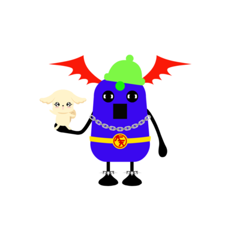
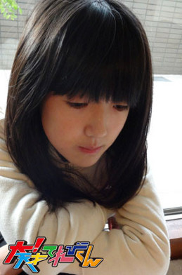
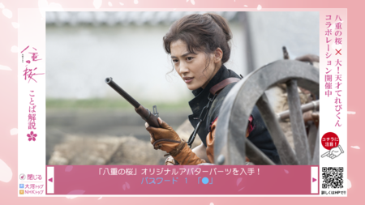
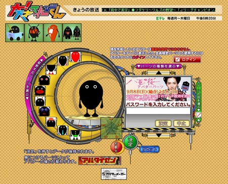

<<2013年10月 | トップページ | 2013年12月>>
2013年11月
【押忍！シャイ番長友情の旅】第１６回・第１７回 金子の日記
シャイ番長・坊勢島編、これまでの旅の日記をアップします。
瀬戸内海に浮かぶ坊勢島で、島のマドンナと友達になるべく奮闘するシャイ番長。
まさかの大雨に見舞われた2日目、ずぶ濡れになりながら迷路のような島の路地をさまよいました。
あの時はスタッフも靴をサンダルに履き替え、全身びしょびしょになりながら撮影しました。
大変なロケでしたがシャイ番長・金子隼也、よくがんばってくれました！
そしてついにマドンナと巡り会ったシャイ番長！
絵の苦手な金子隼也が、マドンナの心をつかむため魂の絵筆を振るいます。
シャイ番長渾身(こんしん)の似顔絵にご期待ください！
次回放送は12/2（月）です。ぜひご覧ください。
山あり谷ありの展開を、シャイ番長の日記でもお楽しみください。
左クリックをすると、原寸大になります。
投稿者:大天才テレビジョン社員１号 | 投稿時間:19時00分 | カテゴリ：お知らせ！ | 固定リンク


 " title="ソーシャルブックマークについて">
" title="ソーシャルブックマークについて">
※NHKサイトを離れます。
【困っていること】島田太一
★最近困っていることベスト3★
第三位
学校のお昼ごはんの時間が、とっても短いんです。
お弁当箱が大きくて、いっぱい入っているので、１５分じゃムリなんです。
なので、いつも昼休みの間も食べて、やっと終わったって感じです。
第二位
この前、ゆいに、ズビイと三人おそろいのストラップをもらいました。
人形が３つならんでるやつなんですが、上がゆいで、真ん中がズビイで、下が太一みたいだねーっていってて、
それを携帯につけてたら、真ん中と、下がとれてしまったんです。
ゆいしか残ってなくて、携帯使うたんびに、ゆいしかいないってことですかねー（笑）
第一位
最近、部活してて、ピンポン球が、よく顔や頭に当たるんです。
冬などは、スマッシュが手にあたると、たぶんすごく痛いと思います。
なので、冬までには、このよくない運からぬけ出したいです。

★うちの家が独特だなと思うところ★
自分の家で小さい時からなぞなことなんですが、寝室の畳から金髪が生えてるんですよ！！！
それは8㎝くらいで、ひっぱると短くなっていくんです。
いや、本当わけわかんないんですけど（笑）
あと、もう1つあって、トイレの床に「！」というビックリマークがあるんです。
ペンとかで書いた感じはなく、線がはいってるんです。
はい、なぞがある家に住んでいる、しまだたいちでした。
投稿者:島田太一 | 投稿時間:18時00分 | カテゴリ：We are 大天才テレビジョン | 固定リンク
" title="ソーシャルブックマークについて">
※NHKサイトを離れます。
最強アバターを決める「アバタイセン」～第8戦～
地上最強のアバターを決める超大型企画「アバタイセン」。今回は第8戦。
大天才テレビジョン内部にあるコンピューターが自動対戦した結果、
全世界に存在する 全24821体 のアバターの頂点に立ったのは…
神奈川県 たかぴさん

おめでとう！
ベスト８の対戦結果はこちらです（左クリックで拡大します）。

アバターの強さは、『パーツ』や『色』の組み合わせで変わります！
番組HPにあるトレーニングセンターで自分のアバターと、てれび戦士や出川特命Pの
アバターと対決させて、最強アバターになる組み合わせを見つけてほしい！
君も最強のアバターを作って対戦の時を待て！
アバターの制作はこちらから！
投稿者:大天才テレビジョン社員３号 | 投稿時間:19時00分 | カテゴリ：大！木曜LIVE | 固定リンク
" title="ソーシャルブックマークについて">
※NHKサイトを離れます。
【困っていること】山田陶子
★最近困っていることベスト3★
３．自転車が、かれこれ一年くらい直ってないこと。
自転車屋さんが、近くになくて、歩いてひいていくのが面倒くさくって、一年たっちゃった・・・。
でも、友達が歩いて付き合ってくれるので、あまり困ってはないかな？
２．近所のレンタルビデオ屋さんがつぶれたこと。
１．体力がないこと。
レンタルビデオ屋さんには、漫画をよく借りに行っていたので、ショック(゜.゜)。
体力ないんですよ・・・すぐ疲れちゃう。
なのに、今、学校の体育が持久走・・・。

持久走キライ・・・・(T_T)
★うちの家が独特だなと思うところ★
う～ん(；一_一)
思い当るところが、本当にない・・・。
家族のルールとかも、とくにないですな～。
いたって普通な家族だと思ってます(笑)
そうですね～
まず、家が好きですね、全員。
リビングで4人で、テレビ観てたらそのまま、4人で爆睡してたりします。
だから、リビングには、4人分のブランケットが置いてあります。
肌触りとかの違いで、取り合いになることもよくある・・・。
よく寝る家族ってとこかな・・・ｚｚｚ
投稿者:山田陶子 | 投稿時間:18時00分 | カテゴリ：We are 大天才テレビジョン | 固定リンク
" title="ソーシャルブックマークについて">
※NHKサイトを離れます。
【困っていること】金子隼也
★最近困っていることベスト3★
こんにちは！隼也です(^-^)
僕が最近困っていることベスト3は・・・
3位 誘惑に負けそう
もうすぐテスト。
勉強しなきゃいけないのに、家には誘惑がいっぱいです。
ちょっと、休憩がどんどん長くなりそうで(>_<)
塾の自習室へ行って、誘惑に負けないように頑張ってます。
あれ？解決した？
2位 腰痛
寝相が悪いのか、姿勢が悪いのか、朝起きたら痛い時があります。
どうやったら痛くならないようになるんだろ。
起きて、体を動かしたらバキバキ音がします。
1位 くせ毛
最近とは違うけど、毎年困っています（笑）永遠の悩みです。

★うちの家が独特だなと思うところ★
母と一緒に、おばあちゃんのところに行っている間、
父は家でお留守番なことが多いのですが、
その時に部屋の模様替えなど、父の感覚で片付けしているので、
家に戻ってから「あれはどこ？」「あれがない！」と困ります。
そうかと思えば、ガーデニングしていたり、花を飾っててくれたり・・・
久しぶりに家に帰る時はどうなっているかドキドキです。
投稿者:金子隼也 | 投稿時間:18時00分 | カテゴリ：We are 大天才テレビジョン | 固定リンク
" title="ソーシャルブックマークについて">
※NHKサイトを離れます。
【困っていること】黒澤美澪奈
★最近困っていることベスト3★
こんにちは！ みれなです (^-^*)/
困ってることですか？
う～んーーーー、
あまり真剣に困ってることが無いので、困りましたね～(^-^;
困ってるといえるかどうか分からないけど
まずは、ベスト3から！
それは、『食べ物がおいしい！』ってことです。笑
食欲の秋は終わったけれど、食欲の冬はこれからです！
冬は、おいしい食べ物がいっぱいなので・・・
心配ですっ！！
次は、ベスト2！
『自転車が、小さいことです！！』
まだ、美澪奈の自転車20インチなんですよ・・・
どんなにどんなに自転車こいでも、速くならない。
ギア付きの自転車が欲しいなあぁ！
いつか乗りすけさんで乗ったような自転車に乗りたいな～♪
最後は、ベスト1！
『ケータイが、まだスマートフォンじゃないことです！！！』
てれび戦士は、ほとんどがスマートフォンなのに・・・です。
でも、戦士や友達とは、心でつながってれば大丈夫！
って、思ってます。。。

★うちの家が独特だなと思うところ ★
お母さんが、みれなを見送ってくれる時、
見えなくなるまでに、1回もふりかえらないと、口をきいてくれなくなります。笑
楽屋の近くから、みんなの声が聞こえると、つい嬉しくて、
振り返らずに部屋に入っちゃったことがあって・・・(^-^;
でも、ふりかえって手をふると、お母さんは、笑顔で手をふりかえしてくれます(^^)
『親しき仲にも礼儀あり』
これがお母さんの口ぐせです！
みなさんのお家は、どうでしょーか？
投稿者:黒澤美澪奈 | 投稿時間:18時00分 | カテゴリ：We are 大天才テレビジョン | 固定リンク
" title="ソーシャルブックマークについて">
※NHKサイトを離れます。
【我が家のお袋の味】ソーズビー航洋
★我が家のお袋の味★
家は、やはり洋食が多いのですが、お母さんが料理苦手で、あんまり作らないのです。
お母さんが作る料理で、
ゆいいつ僕が好きで、ゆいいつ何時でも食べたくなる物があるんです。
それが・・・「チキンのグリル」です！！
外はパリッ、中はプリッ、レモンも効いてて、味と食感のバランスが本当に良いんです！！
舌ざわりと口に運んだ時の音が、もぉ～しあわせ！！！
やわらかいお肉から出てくる肉汁は、体が温まります。
僕は、お肉の中で、とり肉が一番好きなので、
すべてが完ペキな、ゆいいつのおふくろの味でした！！
★さむ～い経験 ★
これは、中学校の入学式で体験した出来事です。
朝、春休みが終わり、悲しい気持ちでもあり、入学するから楽しみの気持ちもありながらも、学校へ向かいました。
クラスが発表され、いよいよ入学式が始まりました。
担任の先生の発表、1人1人名前もよばれ、入学式も終わりに近いてました。
そして最後に、先輩たちが歌う校歌を起立して聞いている途中で、
体の中で″ガン！〃一気に気分が悪くなり、体も重くだるくなって、汗がタキのように流れてきました。
汗は流れているのに、とっても寒くて、学ランも着ているのに、とっても寒くて、周りの視界が白くなったり、戻ったりのくりかえしでした。
校歌も終わり、着席し、体の調子も戻っていき、その数分前の出来事がウソかと思うくらい体が治っていきました。
その時、ある子の背中に真っ赤な手の跡が見えました。
だれかしらと、その子がかぶると同時に、その手の跡は消えました。
それ以来も、教科書に女の子の影がでてきたり、理科室でユウレイを見たり・・・
と、学校がらみの物で怖い事が連続で起きたので、正直学校が怖くなりました。
投稿者:ソーズビー航洋 | 投稿時間:18時00分 | カテゴリ：We are 大天才テレビジョン | 固定リンク
" title="ソーシャルブックマークについて">
※NHKサイトを離れます。
【我が家のお袋の味】中里萌
★我が家のお袋の味★
お母さんの作る料理で大好きなのは、これです。
「砂肝のきんぴら」です（ハート）
これが、また最高なんです！！
私じゃ絶対に作れないお母さんの魔法料理です(^q^)
調味料の分量が絶妙で・・・（ニヤリ）
毎回、食卓に出てくると、すんご～～～っく大喜びしてます！！
★さむ～い経験 ★
先日、収録の合間に楽屋で、つかちゃんと遊んでいたら・・・
何もないところで、いきなり派手に転んでしまいました（笑）（笑）
このドジな自分を直したいのですが・・・（笑）
つかちゃんに「えっ(゜д゜)」という冷たい視線をあびて
すこ～し寒くなる、めぐむでした！（笑）
投稿者:中里萌 | 投稿時間:18時00分 | カテゴリ：We are 大天才テレビジョン | 固定リンク
" title="ソーシャルブックマークについて">
※NHKサイトを離れます。
【我が家のお袋の味】竹原司
★我が家のお袋の味★
こんにちは！司です！
僕の「お袋の味」は
お母さんのぎょうざです。
お母さんのぎょうざは、毎月食べます。
ぎょうざの皮は買って、あんは家で作ります。
小さいころは手伝っていたけど、もう今は手伝っていません！
お母さんのぎょうざは、そとはパリパリで、中はジューシーでおいしいです。
お母さんに「なにが食べたい？」ときかれたら、いつも「ぎょうざ！」と答えます。
ぎょうざ大好き、司でした！
★さむ～い経験 ★
冬に怖い思いをして、さむ～くなりました。
それは、去年の冬に熱を出したとき、
その日雨が降っていて、7:00くらいにねていたら、急に起きて、まどをあけて、へんなことをしゃべったあと、
また、ねるという事件がおきました。
まさに、ジェジェジェ！
お母さんが、声にきづいて見に来たら、僕はもうねていて、
その次の日の朝、お母さんに言われてゾッとしました。
僕は意識がなかったので、聞いておどろきました。
さむーい経験をした司でした。
投稿者:竹原司 | 投稿時間:18時00分 | カテゴリ：We are 大天才テレビジョン | 固定リンク
" title="ソーシャルブックマークについて">
※NHKサイトを離れます。
【我が家のお袋の味】黒澤美澪奈
★我が家のお袋の味★
寒い季節になると
あったかいものが恋しくなる、みれなです(^^)
我が家のお袋の味は、
お鍋でコトコト煮込んだシチューです！
私の、お母さんが作ってくれるシチューは、具がいっぱいです！！
野菜やお肉はもちろん、他にもキノコや小さな貝柱やひよこ豆が入っているんです！
どれも、みれなの好きなものばかり♪
そして、よく噛んで食べるようにと、具は大きめです！
お母さんはこれらの具を、お気に入りの大きなお鍋で、たくさん煮込むので、
とても一度では食べきれません (^-^;
なので、翌朝もシチューが登場します！
でも、朝は、ちょっと変身します！！
グラタン皿にご飯をひいて、その上に2日目の濃くなったシチューをかけ、
ゆで卵のスライス、とろけるチーズをのせて、トースターで焼きめをつけたら出来上がり～♪
これがとっても美味しいんですO(≧∇≦)o
忙しい朝に、栄養満点！！
お母さんのシチューは、毎日食べても飽きないくらい最高です！
冬は、ずっと食べてたいぐらいです！(´∀｀)
このニンジンは、みれなが切って型抜きしました！
お花の形になってるんですよ～
★さむ～い経験 ★
てれび戦士は、基本みんな楽屋（控え室）が一緒です。
だから楽屋では、みんなといつも楽しくしゃべっています！
ただ、たま～に
天てれのギャグマシーンの
太一君や、つかちゃんが
ギャグを言うと
・・・・・・・・・
シーン
幽霊が通ります。。。
ひょぉぉー
寒いっ！笑
たま～に、面白い時もあるけど
幽霊が通ります！笑
そして、そのあと、しばらくたってから笑いがおきるので、
楽屋は、すごくにぎやかで、あったかです！＼(^o^)／
投稿者:黒澤美澪奈 | 投稿時間:18時00分 | カテゴリ：We are 大天才テレビジョン | 固定リンク
" title="ソーシャルブックマークについて">
※NHKサイトを離れます。
【我が家のお袋の味】岡田結実
★我が家のお袋の味★
お袋の味は、オムライスですね。
やっぱ大好きな食べ物だし、
ママが作ったオムライスを好きになったから。
作り方は、簡単だけど愛情が入ってて（笑）
どこのオムライスよりおいしいです。
オムライスもスキだけど、ママが作ってくれるお弁当も大スキです。
お弁当の中身もオムライス！キャラ弁も作ってくれます。
ママも、オムライス大好きです☆笑☆、、、。
★さむ～い経験 ★
ある日、授業中に先生にいきなり当てられて、
でも、自分の得意な科目だったから自信まんまんに答えたら、
全然違くて、クラスのみんなに笑われてしまいました、、、
ハズかしすぎて服で顔をかくしました！！
先生にも笑われちゃったー。（×ο×）
こーんなハズかしいことだらけです。。。
→大天才テレビジョン広報部ブログ担当注：これってさむ～い経験なのか！？ただ恥ずかしかっただけなのでは？
投稿者:岡田結実 | 投稿時間:18時00分 | カテゴリ：We are 大天才テレビジョン | 固定リンク
" title="ソーシャルブックマークについて">
※NHKサイトを離れます。
【我が家のお袋の味】相澤侑我
★我が家のお袋の味★
僕のお袋の味といえば・・・
大好きなオムライスですね・・・
もうホント、僕、オムライス大好きなんですよ～(´^∇^`)」笑
レストランに行っても、ついオムライスを注文しちゃうけど、やっぱりうちのオムライスは最高なんです。
だいたいホワイトソースやトマトソースが多いけど、今日みたいにケチャップで文字を書くのも、また楽しいんですよね！
今日はシンプルに「ゆーが」。上手に書けたでしょ！笑
ちなみに隣に写っているのがお父さんので、
「おとーさん」って書いてみました！笑
でも、もうひとつだけ、お袋の味でオムライスと同じくらい大好きな物があるんです！
じゃじゃ～んｖ(^_^ｖ)♪
手羽の甘辛煮です！
すごく柔らかく煮てあるから、軟骨まできれいに食べます！
これ全部、僕が食べますよ！笑笑
★さむ～い経験 ★
鍾乳洞（しょうにゅうどう）って知ってますか？
家族で行きました(^o^)/
真夏のとっても暑い日だったのですが、鍾乳洞の中の温度は冷蔵庫より低くて、
Tシャツでは寒くて寒くて、あんまり長い時間いられませんでした(^_^;)
でも、外に出るとやっぱり夏で、すぐに暑くなってソフトクリーム食べちゃいました！笑
みんなは行ったことありますか？
投稿者:相澤侑我 | 投稿時間:18時00分 | カテゴリ：We are 大天才テレビジョン | 固定リンク
" title="ソーシャルブックマークについて">
※NHKサイトを離れます。
【我が家のお袋の味】長谷川ニイナ
★我が家のお袋の味★
我が家は、こう見えて和食が多いんですよね～！！
特に、お袋の味と感じるのは「みそ汁」です☆
他にも、ちくわの磯辺揚げとか、豚汁もあるんですけど、
いつも口にするのは、みそ汁なので、やっぱりコレがナンバー1です☆
みそ汁の中で1番好きなのは、一般的な豆腐と油あげ、ねぎが入っているのですかね・・・（笑）
（シンプルisベスト！！！）
あっ、でも最近は、さつまいもが入ったみそ汁も秋らしくて大好きです！
ちなみに昨日は、しじみのみそ汁でした！！
お母さん、いつもありがとう！！！！！
そして。
お袋の味ではないかもですが、おじいちゃんが作ってくれる「ちらし寿司」も最高です！
また食べたいなあ。。。
★さむ～い経験 ★
もう11月ですね～☆
クリスマスとか、お正月は好きなんですけど、冬は四季の中で1番苦手なんですよ（涙）グスン
そして、なぜか手がすぐ冷たくなってしまいます・・・。
【そんな私のエピソード①】
この間寒い日の手を洗ったら、水がとても温かい！！
ビックリして友達に言ったら、その子は「えー、冷たいよ」って言っていました。
つまり、私の手の方が水より冷たかったというわけです・・・。（´Д｀）
【そんな私のエピソード②】
去年なんですけど、あまりにも手が冷たいので、
てれび戦士に「ニイナ、生きてる？」と、マジトーンで言われてしまいました！
でも、たまに、この手は武器になるので、それを活かして、みんなの首を触って驚かしています！！
今年も、みかんとコートで冬を乗り切ろうと思います！
投稿者:長谷川ニイナ | 投稿時間:18時00分 | カテゴリ：We are 大天才テレビジョン | 固定リンク
" title="ソーシャルブックマークについて">
※NHKサイトを離れます。
【我が家のお袋の味】島田太一
★我が家のお袋の味★
自分のお袋の味は、お弁当です！
自分の学校は毎日、給食じゃなくて、お弁当なのです。
まあ、特に変わってることはないのですが、
毎日、お昼にフタを開ける時は、自分の中で、とても楽しみです。
好きなおかずは、卵焼きです。
甘くて、ハシでつかむと、つぶれちゃうくらいフワフワで半熟の卵焼きが一番おいしいです。
あと、ご飯の上にノリがのってる″のり弁″も好きです。
醤油がご飯にしみていておいしいです。
色々なおかずが入っている。お弁当がとっても好きです。
（＾∀＾）ｖ
★さむ～い経験 ★
僕は12年間生きてきて、一番寒かった経験は、
長野県のたくさん雪が降り積っている場所に小屋があって、
その小屋の中で待たなきゃいけない時があったんです。
そこには、ドアも、ストーブもあったんですが、
ドアはこわれてて、ストーブは灯油が切れていて、
くしゃみをして、鼻水がでたんですが、その鼻水も凍っちゃって
で、かばんを見たら、
まさかのおつまみの昆布が1つ入ってたっていう、なんちゅー状況やねーん！！！
まあ、結局、昆布食べながら待ってたんですけど、、、
そうですね、その日が、めちゃ寒かったです。
投稿者:島田太一 | 投稿時間:18時00分 | カテゴリ：We are 大天才テレビジョン | 固定リンク
" title="ソーシャルブックマークについて">
※NHKサイトを離れます。
【我が家のお袋の味】山田陶子
★我が家のお袋の味★
食べること大好きな陶子です(^。^)y-.。o○
ママの作る、私の大好きな料理って、色々、あるんですけどね～。
最近は、寒いんで温かいものの中から、これ！
☆味噌おでん☆
赤味噌で、甘めに煮てあります。
昨晩食べちゃったんで、お皿にないけど、ちくわが大好き。
フワフワのちくわに、味噌が染みて美味でつ(*^^)
大根も、もちろん大好き、里芋も・・・こんにゃくも・・・。
全部好きですな(-_-;)。
そして、新米が美味しいこの季節。
食べ過ぎに注意しなくては(；一_一)ですな。
★さむ～い経験 ★
友達と下校途中のこと・・・。
なんとなぁ～く、「月」の形の話をしてまして・・・。
友達が「満月まんげつ」と言ってきたので、
すぐに、「三日月」が浮かんで、
言ってやろうと思って、口から出たのが、「みかげつ」！！！
友達の冷ややかな目・・・(゜.゜)
「みかづき・・・じゃね？」
「・・・・・・・・・ですね(；一_一)」
「まんげつ」につられましたね・・・。
仲良しなんだけど、その時はなぜか笑えず・・・。
逃げ出したかったっすｗｗｗ
投稿者:山田陶子 | 投稿時間:18時00分 | カテゴリ：We are 大天才テレビジョン | 固定リンク
" title="ソーシャルブックマークについて">
※NHKサイトを離れます。
【我が家のお袋の味】金子隼也
★我が家のお袋の味★
こんにちは！
隼也です(^_^)
ハンバーグやカレーってお家によってそれぞれの味がありますね。
やっぱり家のが大好きです。
料理の中で一つあげるとすると、
ジャーン「小松菜の煮浸し」です。地味ですかね（笑）
小さい頃から香川のおばあちゃんの家によく行っていて、「ひじき」とか「小松菜」とかよく食べていました。
もちろんお母さんのも美味しいですが、どうしてもおばあちゃんの味には勝てません。
何が違うんですかね（笑）
ちなに写真は母のです。
バラエティで、みんな玉子焼き全員正解でしたねー。さすが！
毎日お弁当を作ってもらっているので、僕も食べて当てる自信あります。
今日のおかずは、にんじん豚肉ロールでした。
いつもお弁当ありがとう。

★さむ～い経験 ★
シャイ番長の大阪ロケでホテルに泊まった時のことです。
寝ようとしていた時にドアをノックされました。
遅い時間だったのでスタッフさんではないと思ったのですが、
念のため覗いてみたけど誰もいなかったのでそのまま寝ることにしました。
それなのに、寝ている間もずーっと何回もノックをされて(￣▽￣;)
普段何も感じたりしないのですが、さすがに怖くて部屋の電気をつけて
イヤホンして音楽を聞いて寝ることにしました。
なかなか寝れませんでしたけど(;＞_＜;)
次の日、スタッフさんに聞いてみると「してないよ」と言われて…。
今考えても、凍りつくような寒～い体験です。
投稿者:金子隼也 | 投稿時間:18時00分 | カテゴリ：We are 大天才テレビジョン | 固定リンク
" title="ソーシャルブックマークについて">
※NHKサイトを離れます。
【我が家のお袋の味】中尾美晴
★我が家のお袋の味★
私のお袋の味は、お母さんのつくった「ほうれん草のおひたし」です。
実は、美晴、毎日食べています☆☆
今まで、色んなほうれん草のおひたしを食べたけど、お母さんのが一番おいしいです！
しょうゆかけるだけの「おひたし」ちゃうで！
絶妙な味付けやねん☆
ほうれん草苦手な子も、お母さんのおひたしやったら、絶対食べれるわ～☆
今日もおいしい♪
あきへん味☆
★さむ～い経験 ★
この時期になると思い出す。寒～い経験。
それは冬場の水泳の朝練！
学校へ行く前に練習あるんやけど、外はまだ暗いし、むちゃくちゃ寒い（汗）
しかも更衣室も暖房が、まだかかってない。
プールの水も、やっぱり冷たい。
練習後、これもまた寒い・・・。
大阪やのに、い～～～つもスキーウェアで朝練は行ってたよ！！
投稿者:中尾美晴 | 投稿時間:18時00分 | カテゴリ：We are 大天才テレビジョン | 固定リンク
" title="ソーシャルブックマークについて">
※NHKサイトを離れます。
【我が家のお袋の味】野田真哉
★我が家のお袋の味★
お袋の味か～、、、
いくつか候補があるけど、やっぱりハンバーグです！
手間がかかるから、作ってもらえるのは、たまにだけど。
たまにだから、よけいにおいしく感じます。
フライパンで焼いてる時の音を聞いてるだけで、ヨダレが、、、ｗｗｗ
そして食べたら、もうはしが止まりません！
また久々にハンバーグ食べたけど、やっぱりおいしかったです。
★さむ～い経験 ★
最近、さむくなってきましたね～、、、
だから、うちは、ずっとシャワーだけだったんですが、お風呂に入るようになりました。
で、この前、いつもどうり体を洗って、お風呂に飛びこんだら、悲劇が、、、
お湯じゃなく、水でした。
寒かったです。
そんなぼくは、今、風邪をひいています、、、
投稿者:野田真哉 | 投稿時間:18時00分 | カテゴリ：We are 大天才テレビジョン | 固定リンク
" title="ソーシャルブックマークについて">
※NHKサイトを離れます。
【我が家のお袋の味】延命杏咲実
★我が家のお袋の味★
こんにちは。食べるのが大好きな延命です。
私の家のおふくろの味は、お父さんが作る「あんかけやきそば」です。
めんは、おこげがついていて、パリッとして、とてもおいしいし、
あんは具材がたっぷり入っていて、トロみもあっておいしいです。
めんと、あんがまざると最高においしいです！
お父さん、これからもおいしいご飯を作ってね！
お母さんも、たまには作ってね(笑)
★さむ～い経験 ★
私が３年生の時、学校の社会科見学で近くのスーパーに行きました。
いろんなところを見せてもらいましたが、野菜をほぞんするそうこにも入らせてもらえました。
さっそく入ったら、すごく寒かったです！
寒すぎて、７～８秒たったら、外へにげていきました(笑)
またチャレンジしたいなあ。
投稿者:延命杏咲実 | 投稿時間:18時00分 | カテゴリ：We are 大天才テレビジョン | 固定リンク
" title="ソーシャルブックマークについて">
※NHKサイトを離れます。
【読書の秋２０１３】金子隼也
★読書の秋２０１３★
秋ですね～。
読書大好き隼也です！
「読書」っていうと長い本だと一気に読まないと、ストーリーを忘れちゃって、また読み返したりする事ってありませんか？
絵本って小さい頃だけ読む本。って思うかもしれないけど違いますよー(笑)
僕の家には沢山絵本があります。
幼稚園の頃に大好きだった本、小学生の時に読んだ本、また読んでみると新鮮な気持ちになったりします。
最近読んだ本は「ヤクーバとライオン Ⅰ 勇気」です。
小学校の時に読んでいた絵本ですが、この本からは、すごく大切な事を学んだ気がします。
あらすじは、少年が自分の名誉のために怪我をしたライオンをたおすか、それとも戦わないか？
戦わないで村で少年の立場は悪くなるけれど、他に得たものがありました。
この本は、本当の勇気を教えてくれる本だと僕は思いました。
絵本なら、時間がなくても読めちゃいます。
懐かしい絵本を読んでみるのもオススメです！
★倍返ししたいこと★
僕が先日松葉づえで電車に乗っていた時の事です。
電車が混んでいて席には座れませんでした。
優先席には妊婦さんや年配の方もいましたが、そうじゃない人も座っていました。
絶対かわってほしいとは思わなかったけど、正直さびしいなって思いました。
僕はこの事をきっかけに、もっと積極的に席を必要としている人に譲ろうと思いました。恥ずかしがらずに！気づける人になりたいです。
倍返し？ちょっと違いましたか？(笑)
松葉づえがなくても歩けるようになりました。心配かけてごめんなさい。
投稿者:金子隼也 | 投稿時間:18時00分 | カテゴリ：We are 大天才テレビジョン | 固定リンク
" title="ソーシャルブックマークについて">
※NHKサイトを離れます。
【読書の秋２０１３】長谷川ニイナ
★読書の秋２０１３★
私のオススメは「陽だまりの彼女」という本です！
映画にもなりましたよね！
実はその前から読んでいたので、映画化された時はビックリしちゃいました！
（それで結局、話を知っていながら、映画も見に行っちゃいました（笑））
ザックリ言うと恋愛物のファンタジー系です！！
中学生の頃に思いを寄せていたいじめられっ子と、１０年後再会するというお話なんですけど、
主人公の２人にキュンキュンします(ゝωσ)″
が、後半からはミステリアスな感じになり・・・。
読んでいくうちに物語に引き込まれてしまいますね～！
恋愛系のものを、あまり読まない人にもオススメです！！
あと、最後に！この本にでてくる「素敵じゃないか」という歌も気になって聞いたんですけど、いい曲ですね！！
歌詞が、まさに素敵じゃないか、と思いました(笑)
皆さんも、ぜひ読んでみてください！
★倍返ししたいこと★
この間、朝食に家族分のパンケーキを作りました！！
だいたいは上手く作ることができたんですけど、最後のほうに作ったパンケーキ。
引っ繰り返したら、失敗してグチャグチャに・・・。
しかも、隣とくっついてしまいました。
仕方なく食べたんですけど、こういうのは私、できるようになるまで、納得するまでやりたいタイプで・・・。
つまり面倒くさい人ということですよね！（笑）
次は絶対倍返しで上達するぞー！！！
（この間の、倍のパンケーキを引っ繰り返して、料理のスキル上げるぞー！という意味です！）
投稿者:長谷川ニイナ | 投稿時間:18時00分 | カテゴリ：We are 大天才テレビジョン | 固定リンク
" title="ソーシャルブックマークについて">
※NHKサイトを離れます。
【読書の秋２０１３】黒澤美澪奈
★読書の秋２０１３★
みれなです(^0^)/
私が、おすすめしたい本は･･･
「すごいぞ！「しんかい６５００」」という本です！
「しんかい６５００」とは、海を６５００ｍまで深く潜ることができる有人潜水船です！
人間が富士山の高さの２倍近くも、海を潜ることが出来るなんて、凄くないですか？
私は魚が大好きで、いろいろな本を読んでいるうちに、深海のことに凄く興味を持ちました！
この本には、海深くに生息している生物や、得体の知れないもの、
また地球の内部の謎まで、分かりやすく書かれています！
実は、深海って、まだ分からないことが多い未知の世界なんですよね。
それは、宇宙と同じように、人間が簡単に行く事が出来ないほど、過酷な環境だからなんです。
そんな過酷な環境に挑むことが出来る、「しんかい６５００」。
その「しんかい６５００」をつくる苦労や努力、深海での活躍なども、たくさん書いてあります！
図解もあって、とっても読みやすいです！
みれなは、繰り返し何度も読んでいます。
興味がある方は、ぜひ読んでみてくださいね！
★倍返ししたいこと★
みれなが幼稚園生のときのことです。
年末にお母さんと家の近くの郵便局に行きました。
その郵便局で外国人のおじいさんが、たくさんの手紙に切手を貼っていました。
そのおじいさんは、切手を舌で一枚、一枚なめていたんですけど、
口が渇いてしまったみたいで大変そうにしていました！
なので、私は思わず身ぶり手振りで
郵便局に置いてある“水を染み込ませたスポンジ”のことを教えてあげたら…
「オー！サンキュー♪」
といって、鼻歌を歌いながら、笑顔で切手を全部はりおえた後、
そのおじいさんは、みれなに銀色の綺麗なコインをくれました。
それは、ピカピカの５００円硬貨でした。
でも、スポンジのことを教えてあげただけなのに、こんなに貰っていいのかな？
と思い、そのことをお母さんに話したら、
「ダメでしょ！知らない人からお金をもらったら…」と叱られてしまって
さっきの外国人のおじいさんを、お母さんと追いかけましたが
もう、どこにもいなかったんです！
倍返しと聞いて、つい、あのおじいさんのことを思い出してしまいました
それも、倍どころか、何十倍、何百倍返しだと思いました
そういえば、あの時、12月だったんですね
あの人は、サンタさんだったのかな…？
投稿者:黒澤美澪奈 | 投稿時間:18時00分 | カテゴリ：We are 大天才テレビジョン | 固定リンク
" title="ソーシャルブックマークについて">
※NHKサイトを離れます。
「八重の桜」アバターパーツ！！第３弾
きょう１１月３日（日）の大河ドラマ「八重の桜」のデータ放送で、アバターのコラボパーツ第３弾を獲得するためのパスワードが発表されます。
それでは、今回ゲットできるパーツを紹介しましょう。
八重の桜「ウエディングドレス」バージョン
八重の桜「傘さし」バージョン
八重と傘には、彼女の人柄を表すエピソードが残されています。
雨の日に、自分の家の前を傘を待たずに歩く人がいると、八重は傘を持って外へ飛び出していき、誰にでも貸してあげたそうです。
人を助けることが大好きだった八重の人柄を知ってほしいと思い、大河ドラマ「八重の桜」では、オープニングタイトルの最後に八重と子どもたちが傘をさすシーンを加えています。
人のために何かしたい、そんな気持ちの輪が広がっていく世界が八重、そして私たちの永遠の願いなのではないでしょうか。
パーツの獲得方法

☆「八重の桜」の放送中、データ放送の「ことば解説」のなかでパスワードを１文字ずつ発表します。
☆パスワードすべての文字をメモして、「大！天才てれびくん」のアバターメイカーのページへ。
☆パーツ選択画面で「桜」のマークが出ているものが「八重の桜」パーツです。

☆出てきた入力画面にパスワードを入れれば獲得完了です！
※「八重の桜」パーツは一体につき複数個あります（たとえばドレス、傘、帽子…のように）。上のようなアバターを作るにはすべてのパーツを獲得する必要があります。
投稿者:大天才テレビジョン社員１号 | 投稿時間:08時00分 | カテゴリ：お知らせ！ | 固定リンク
" title="ソーシャルブックマークについて">
※NHKサイトを離れます。
【読書の秋２０１３】相澤侑我
★読書の秋２０１３★
毎週観ている「八重の桜」で興味を持って読んでみようと思った本が、二本松少年隊のお話「霞の天地」です。
テレビでは少年兵が鉄砲を持って戦い、ほとんどが撃たれてしまっていました。
この本では、戊辰戦争という白虎隊が活躍した事でも有名な戦いで………
二本松少年隊は徳川家に対する忠義と、自分の故郷や国や家族を守るため、二本松藩の武士道のために立派に戦ったと書いてあります………
(ちょっと難しい(´Д` ))
その少年兵はほとんどが戦死してしまいましたが、僕がびっくりしたのは、少年兵の年齢です。
なんと、13歳～17歳だったそうです(>_<)
13歳と言えば、太一くんやズビー、真哉くんくらいですよね………
そんな少年達が、お殿様のためならと、自分から出陣を望んだというのが、今の僕には考えられません。
もし今、戦争が起きたら………
あのドラマでは、八重さんが戦死した少年を抱いて泣き叫んでいました。
あの姿を思い出すと、絶対に戦争なんてしてはいけないっ！
と、僕は思いました。
★倍返ししたいこと★
最近「倍返し」っていう言葉が流行ってますね！
倍返ししたいことかぁ………
そうそう、今日テニスで友達に負けたことですかね(´Д` )
今度は友達の「倍」練習して、勝つゾォォ！
………？(´・曰・`)？………
これって倍返し？笑笑
じゃあね～(^_－)－☆
投稿者:相澤侑我 | 投稿時間:18時00分 | カテゴリ：We are 大天才テレビジョン | 固定リンク
" title="ソーシャルブックマークについて">
※NHKサイトを離れます。
ページの一番上へ▲


{kind=link}
{kind=link}
{kind=link}
{kind=link}
{kind=link}
{kind=link}
{kind=link}
{kind=link}
{kind=link}
{kind=link}
{kind=link}
{kind=link}
{kind=link}
{kind=link}
{kind=link}
{kind=link}
{kind=link}
{kind=link}
{kind=link}
{kind=link}
{kind=link}
{kind=link}
{kind=link}
{kind=link}
{kind=link}